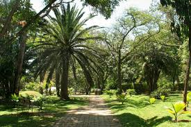
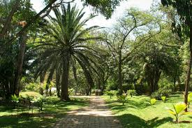

En Medellín, nos encontramos con un gran número depuntos de ecología. Estos puntos de ecología son
especialmente destacados por su excelente calidas, la calidad de los productos y la calidad de los
servicios. sin embargo, es importante tener en cuenta las normas para mantener el entorno ecológico en
óptimas condiciones
Respetar la flora y fauna
Evitar tocar, recolectar o dañar plantas y animales en su habitat natural
No arrojar basura
Utilizar contenedores adecuados y mantener los espacios limpios
Seguir los senderos designados
Caminar solo por areas permitidas para preservar la vegetacion y evitar la erosion
No alimentar a los animales
Evitar darles comida a los animales para prevenir dependencias y alterar su comportamiento
natural
no hacer fuego
prohibido encender fogatas o usar dispositivos de calefaccion, especialmente en areas no
designadas
Controlar a las mascotas
En caso de permitirse, mantener a las mascotas bajo control y recoger sus excrementos.
Respetar las señales y normativas
Segir las indicaciones y reglamentos establecidos para garantizar la seguridad y conservacion del
area
No hacer ruido excesivo
Mantener un nivel de ruido bajo para no perturbar a la fauna ni a otros visitantes.
Ser responsable con el agua y la energia
Utilizar los recursos naturales de manera consciente y evitar desperdiciar agua y energia.


 
